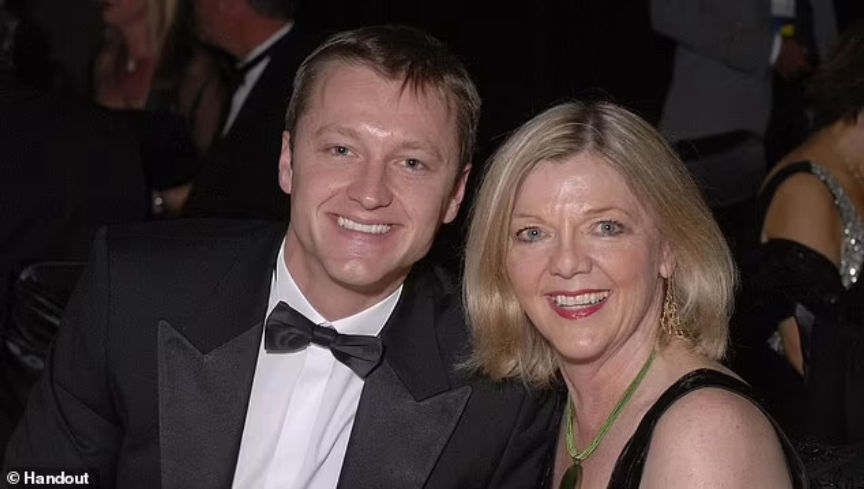
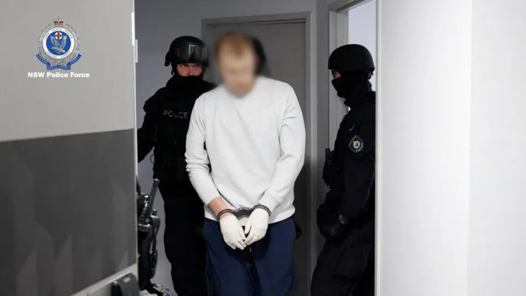
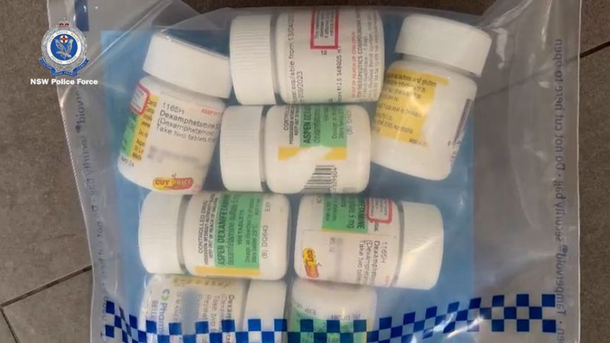
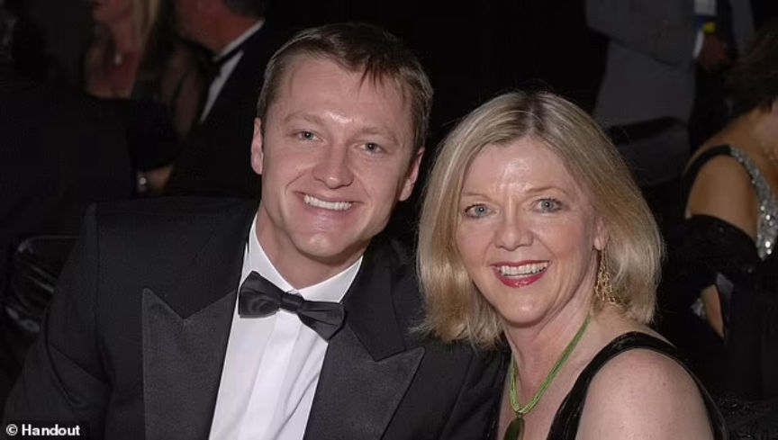
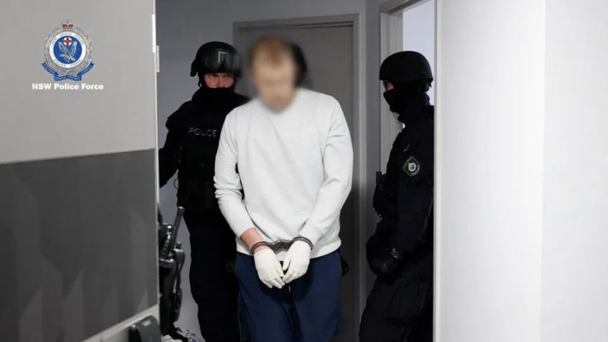
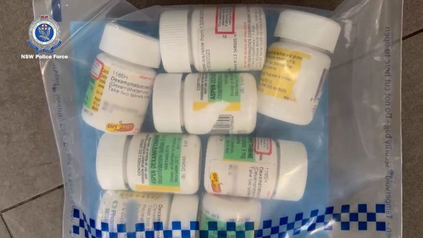

Australian Drugs Vendor AusCokeKing Busted
~2 min read | Published on 2023-05-21, tagged Arrested, Darkweb-Vendor using 298 words.
Police in New South Wales, Australia, arrested a man suspected of distributing large quantities of cocaine and other drugs through the dark web under the moniker "AusCokeKing".

The NSW police Force disclosed in a press release that their investigators arrested 37-year-old Mark Chikarovski on the suspicion that he had been distributing large quantities of cocaine, meth, and MDMA on dark web marketplaces through the AusCokeKing vendor profile since 2017.
The investigations that resulted in Chikarovski's arrest were conducted by Strike Force Cesta investigators. The investigators came across his vendor profile on an undisclosed dark web marketplace. The task force was launched in January 2023 by the State Crime Command’s Cybercrime Squad and tasked with investigating the distribution of illicit drugs in NSW through the dark web.
The investigators executed search warrants at an apartment and a house on May 18, 2023, following "extensive inquiries." At the apartment, the investigators allegedly found Chikarovski in the middle of weighing and packaging drugs for mailing to his buyers.

The search resulted in the seizure of two Porsche SUVs, over $19,900 in cash, and more than 178,800 in cryptocurrencies. The investigators also found and seized undisclosed quantities of cocaine, meth, MDMA, and other drugs.

Chikarovski was subsequently charged with over 31 offenses including 16 counts of supplying illicit drugs and dealing with proceeds of crime.
He was granted bail by the Waverley Local Court on May 19, on condition that he reports daily to the police, surrenders his passport, and not use any electronic devices.

Chikarovski and his mother
The NSW police Force disclosed in a press release that their investigators arrested 37-year-old Mark Chikarovski on the suspicion that he had been distributing large quantities of cocaine, meth, and MDMA on dark web marketplaces through the AusCokeKing vendor profile since 2017.
The investigations that resulted in Chikarovski's arrest were conducted by Strike Force Cesta investigators. The investigators came across his vendor profile on an undisclosed dark web marketplace. The task force was launched in January 2023 by the State Crime Command’s Cybercrime Squad and tasked with investigating the distribution of illicit drugs in NSW through the dark web.
The investigators executed search warrants at an apartment and a house on May 18, 2023, following "extensive inquiries." At the apartment, the investigators allegedly found Chikarovski in the middle of weighing and packaging drugs for mailing to his buyers.

Chikarovski being arrested
Quote:Detective Superintendent Matthew Craft
We don't believe that he was even aware that law enforcement had an interest in his activities at the time.
He was packaging illicit drugs ready to post. He was taking precautions, he was wearing gloves at the time he was actually arrested.
The search resulted in the seizure of two Porsche SUVs, over $19,900 in cash, and more than 178,800 in cryptocurrencies. The investigators also found and seized undisclosed quantities of cocaine, meth, MDMA, and other drugs.

Some of the seized drugs
Chikarovski was subsequently charged with over 31 offenses including 16 counts of supplying illicit drugs and dealing with proceeds of crime.
He was granted bail by the Waverley Local Court on May 19, on condition that he reports daily to the police, surrenders his passport, and not use any electronic devices.